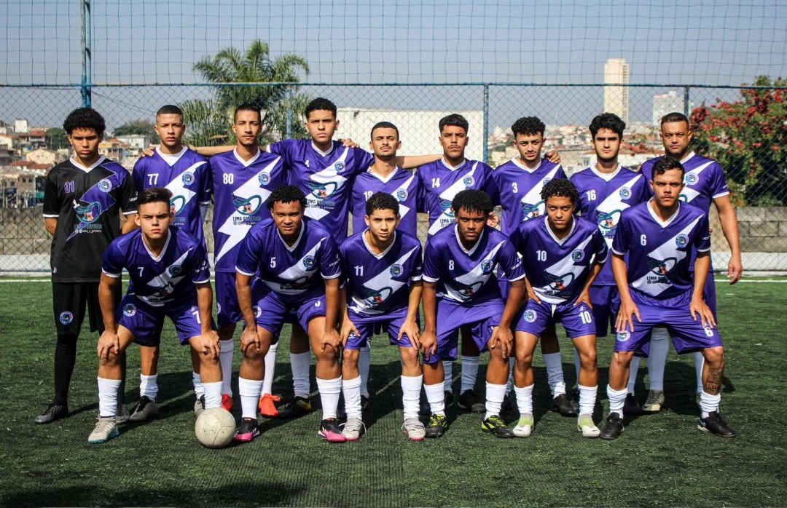
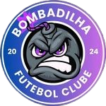

O Bombadilha Futebol Clube é um time de futebol amador fundado em 2024, composto por um grupo apaixonado pelo esporte. Desde o início, o Bombadilha FC se destacou pela determinação e espírito de equipe, unindo jogadores que compartilham o amor pelo futebol e o desejo de competir. Embora jovem, o time já demonstra um forte compromisso com a excelência, buscando sempre evoluir e deixar sua marca no cenário do futebol amador. Com energia, talento e união, o Bombadilha FC está pronto para enfrentar desafios e construir uma história de sucesso e amizade no esporte.
Fotografia: Vinicius Buck Scapucini - Fotógrafo Esportivo
Design das fotos: Marih More